Hello, reader. This is your host dogewoz typing this... dare I say handbook?
Well, anyways. You've seen the filename. This is
In this handbook, you'll be reading about the development of DOGVERSE.VHS.
Cut to Summer 2023. I'm bored as shit, and I wanted something to occupy my time. I had just bought RPG Maker 2003 off of Steam. At that time I have not heard of Oneshot yet. Actually no, scratch that. I've watched Markiplier's playthrough of Oneshot, right up until the end, but I really wanted to play it for myself. Managed to pull $10, bought it, played it, and beat it, without shedding a tear. (I really am an emotionless monster, eh?)
I played Oneshot, played it again, and played through it "another way". After all of that, I found out it had a freeware version, so I thought, "why not use the 2014 assets to make a really shitty fangame?" I downloaded the v1.03 version of Oneshot.
BUT HOLD ON A MOMENT. Let's backtrack a little bit. So, again, Summer 2023. I had just gotten bored and opened up the RM2k3 editor, and created a map.
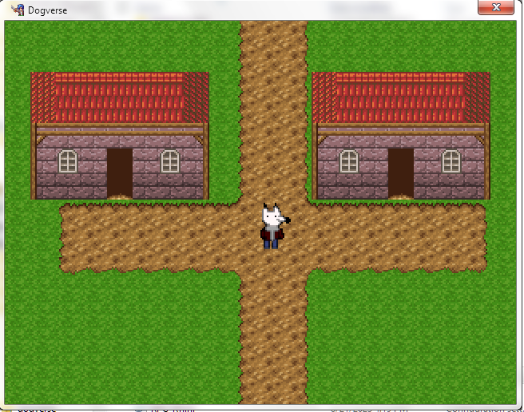
Bam, showed you a picture of the earliest prototype of dogverse.vhs, and this is pre-oneshot assets, pre-maniacs patch too. Just standard RTP, and vanilla RM2k3.
At that point, everything was in the design phase. There were earlier prototypes, but they weren't compiled, and are lost, because I never bothered to press the "Create Installer" button, right up until this point. On a side note, I'll release this prototype if i reach 10 HUMAN members in the Team Goobert discord server. It's around 15 MB in disk size.
Anyways, back on track. Now, where does goobert come into the picture? Well, I had known him for a bit, and asked him to help me out with it. Coincidentally, he was interested in Oneshot as well, and agreed... only if he were the lead developer. I was like "sure why not". By the way, there isn't a hierarchy, it's just titles to make us sound cool. We did everything at the same time, so don't let the credits video or the snazzy titles fool you. The tasks weren't divided up, we developed everything.. except for the original music, that was made by me in Beepbox.
We decided to "remix" the Oneshot music. By that I mean loading it into Audacity, giving it some reverb and echo effects with some tempo changes, and putting it back into the "Music" folder. Not really a remix now, is it.. right? You decide.
And we even put in the maps from Freeware Oneshot into DOGVERSE.VHS. Nothing like a good ol' full organ transplant, amirite gamers???
But seriously, we did put in the maps from Oneshot into this fangame.. and decided to change some stuff here and there... with some errors.
I will go on record and say, we made some documents listing some ideas we have for the game. Of course, this document is very outdated and just... nonsensical.
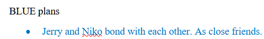
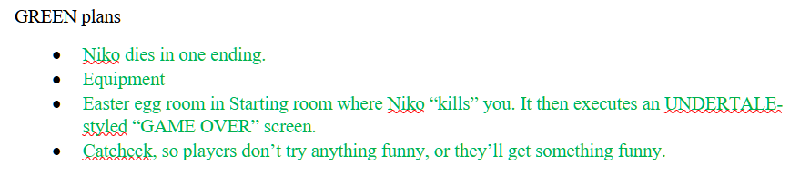
These ideas were implemented in some form (minus the niko dying one, that one was scrapped in between the OMEGA build and the Beta 1.0 build, more on these builds later...). Jerry and Niko talk to each other during the course of the game, the easter egg was hidden in the starting house living room, to the right. The Equipment idea became the stuff you see in the game, like the fluffy scarf, the switchblade. etc. The Catcheck idea... on the other hand, was implemented in a simple way.
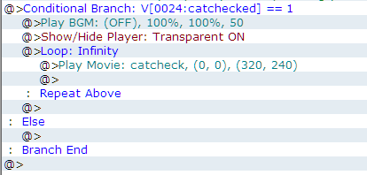
Basically, the Catcheck screen is it's own room. Think of it as the Dogcheck screen from Undertale. A blocked off, developer room, like this room we named "testroom2" in the game's tree structure...
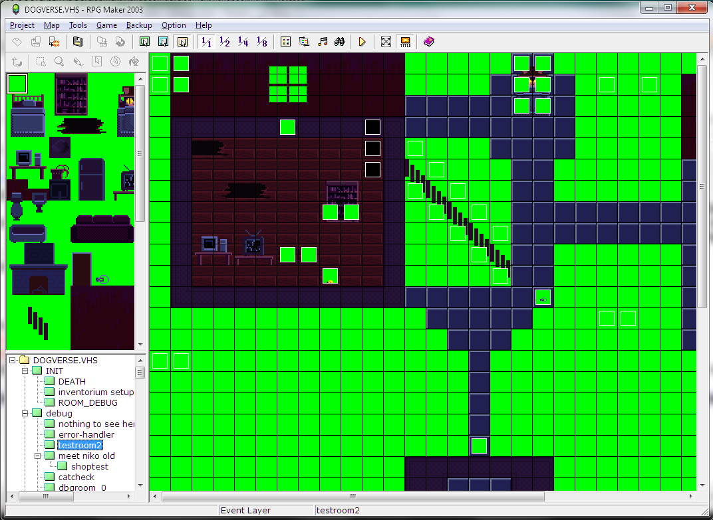
... has an event in it that constantly calls a common event.
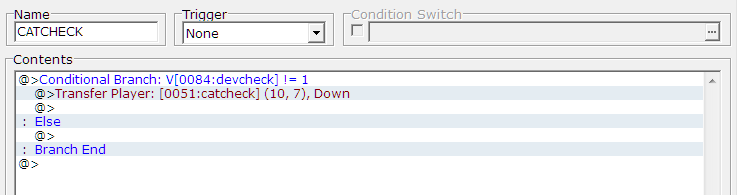
In short, it checks if the game has a variable set, which can only be set if the game is ran from the RM2k3 editor (Playtest mode).
If it isn't ran from the editor, then it will "catcheck" you, by transfering you to the catcheck room.
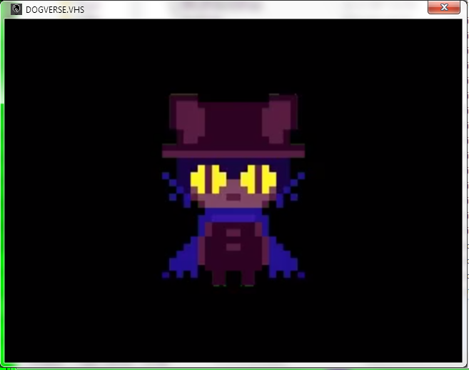
It's a video, of course. You can't exactly screenshot a video, only a still frame from that video. But hey, here's what the catcheck screen looks like.
Moving on... I've counted, and there are exactly 20 builds of DOGVERSE.VHS compiled overall, from the early developer builds, right up to v1.01.
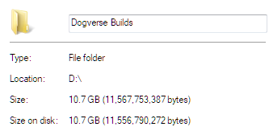
aaannd it takes a whopping 10gb of disk space!!
And why does it have almost 11gb of disk space? Well, the prototypes kept on increasing in size as more stuff was added.. There, simple answer, really.
Now, to answer the biggest question of all time... why .VHS? Why does DOGVERSE.VHS have a .VHS at the end? Are the creators stupid?
First of all, very.
Secondly, it was because of the grainy scanline "filter" we put over the game.
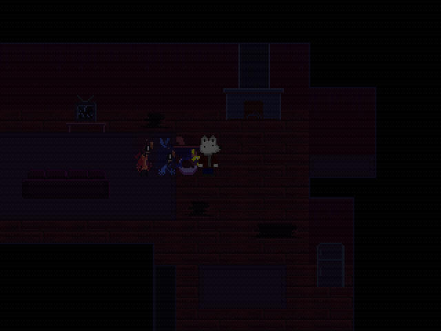
Or rather... most of the time. The filter isn't applied to non-Oneshot maps.
The filter's applied with a common event. Without the common event, this is what a map would look like.
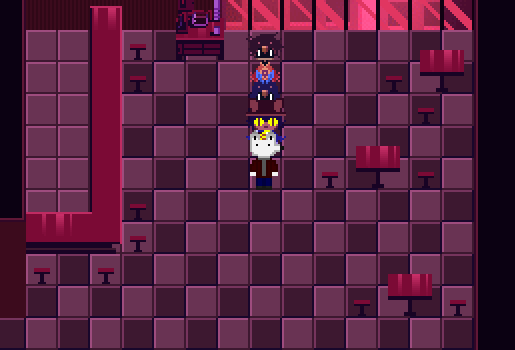
It honestly just looks a lot better, without that grainy ass VHS filter.
So, Late June 2024. Release was only a few days away. Beta 1.5 was the latest public build at the time.. Me and goobert were working on the internal Release Candidate builds.
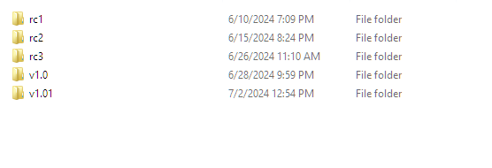
These RC builds had minor changes, small size differences, often decreasing in size, and can be played from start to finish.
Or actually, If I recall correctly, either Beta 1.4 or 1.5 were the first builds to be able to be played from start to finish.
On an unrelated note, technically, goobert was the first person to record a playthrough of DOGVERSE.VHS v1.0. But otherwise, nobody has yet recorded a video yet, at the time I'm writing this.
Or at least, not that I know of.
Anyways, here are the links to goobert's videos, split into two parts.
YouTube wouldn't allow the videos to be uploaded because goobert doesnt have a phone number connected to his channel
And to be quite honest, I dunno if goobert was trying to speedrun his own game, or casually play through the game.
And hey, remember how I mentioned the OMEGA build? Well, that build was a really weird alpha build.
The battle system wasn't even finished at that point, and heck, it used the battle and victory music from SMRPG as a placeholder.
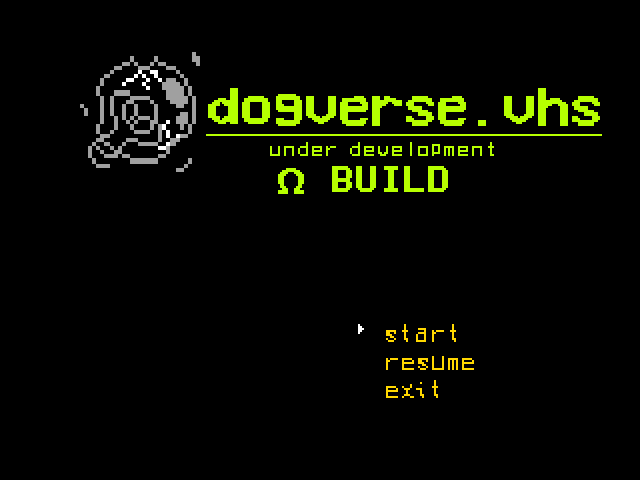
Here's the title screen. It looks very different, because it does indeed look very different.
We were aiming for a more... how should I put this... oh right, a more darker atmosphere.
Heck, even the main menu music was different! Here it is:
If you're one of those people who like peeking around through the game's files, you might recall listening to this file.
This song is an amalgamation of "My Burden is Dead" and "My Burden is Light" playing on either side of the speakers.
... along with the drum background sound effect from GTA IV. (if you've listened to the main theme of GTA IV, you'll see what I mean)
And yep, this was the main menu music, up until May 2024, where it was replaced by the final menu music.
Moving on, there was gonna be a section you'd be able to traverse through. It'd be modeled after Niko's village. It would've used the RM2k3 RTP tileset.
Only surviving things I have from that section are two versions of this audio file for the section. Version 1's just the original RTP midi, but faster and reverb'd. Version 2 is like Version 1, but it uses Niko's Leitmotif and the My Burden is Light Leitmotif (by leitmotif in this case, i mean the whole frickin song).
Here's version 1:
And here's version 2 (i had to go back and find the original audacity project, and export it again):
Well, that's all I wanted to share with you, reader. Who knows, maybe I might revise this and add more stuff here.